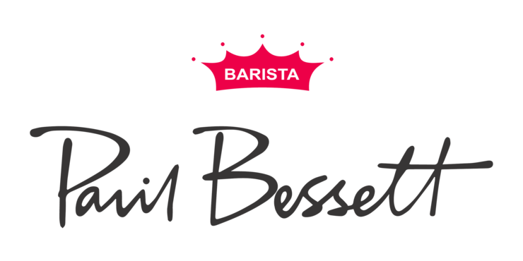

The icon provides easy access to each franchise site. Enjoy your
favorite coffee comfortably through the icons on each site. It also
provides an introduction to the franchise.
Starbucks:
The name "Starbucks" was coined by adding an 'S' to Starbucks, the
first mate of the whaling ship Pequod in Herman Melville's famous
novel Moby Dick.
A Twosome Place:
The trade name "A TWOSOME PLACE" contains the meaning of a space
where A (alone) + TWO (two people) + SOME (even three or more) can
enjoy together.
Mega Coffee:
Like the brand name meaning 'extremely large coffee', coffee is also
served in large quantities.
Ediya Coffee:
Ediya means 'Emperor of the Continent' in Amharic. However, just
because the name of the cafe is an Ethiopian concept, it seems
that they do not use only Ethiopian coffee beans. Generally,
blending beans used in franchisees are mixed with Colombia,
Ethiopia, Guatemala, and Kenyan products.
Paik's Coffee:
It started in 2006 when a coffee shop named 'Wonjo Bugs', a parody
of Starbucks, was opened in front of the Wonjo Ssambap restaurant in
Nonhyeon-dong, run by Baek Jong-won.

Paul Bassett:
A coffee chain named after an Australian barista named Paul Bassett,
who won the 2003 Barista Champion.